First Info - IAYC 2017 (16th July - 5th August)
The International Astronomical Youth Camp (IAYC) is a three-week long summer camp aiming to promote knowledge of astronomy and related sciences in a unique international atmosphere. It is organised by an international team of students and young scientists, all members of IWA e.V.
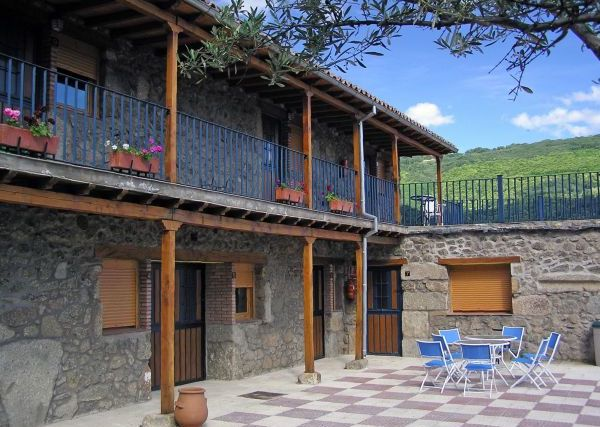
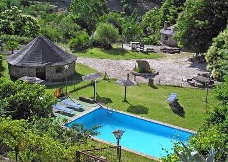
El Solitario, Baños de Montemayor
More detailed information about the IAYC in general, participants, the daily schedule and obsvering during the IAYC can be found in the About the IAYC section. We strongly recommend all prospective participants read this section as well as this First Info carefully! The PDF version of the First Info can be found here.
Please note that applications for the camp are now closed and we have a long waiting list. We are not accepting further applications for 2017.
About the IAYC 2017
The IAYC 2017 will be taking place in Spain for the first time in over 15 years. It will be at El Solitario, a rural touristic complex with many years of history. In the year 1982, the current owners acquired it and turned it into the place it is today with the construction of huts and a hostel oriented to favour rest and respect for nature in the natural environment of the Ambroz Valley in the north of Extremadura.
It is located 5 minutes away from the authentic Roman Baths of Montemayor, which date back to the first century and are known for their therapeutical hot springs.
Apart from the hostel and the huts, El Solitario also has four little houses which will provide the perfect environment to work on the different projects, a big hall for playing games with a bar and a kitchen, and the restaurant which also provides a bar service. There is also plenty of space outside for games and activities, such as a football yard, a pool, a playground and an abandoned bullring, that will be used for observing.
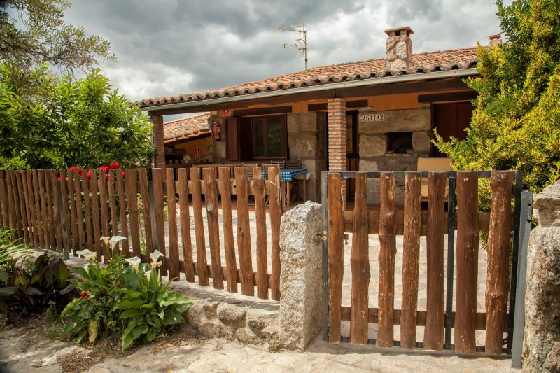
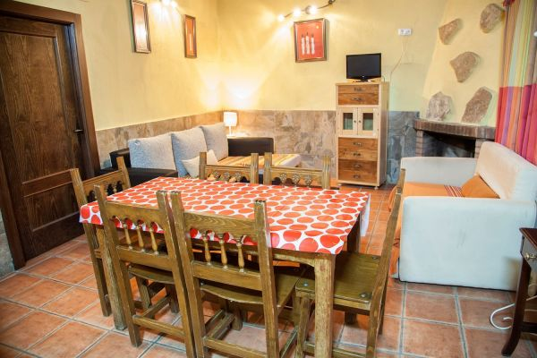
Address:
El Solitario,
Ctra. N-630,
Salida 427 A-66,
10750 Baños de Montemayor,
Cáceres,
Spain,
Coodinates:
- Latitude: 40° 19’ 25.5” N
- Longitude: 5° 51’ 36.5” W
Altitude: 786 m
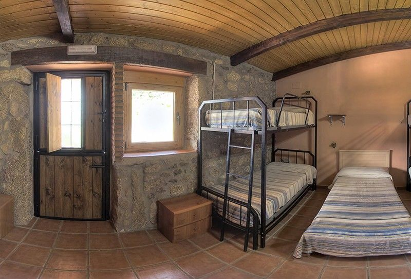
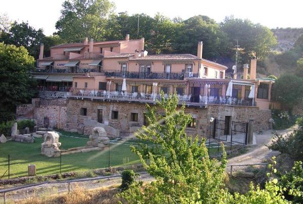
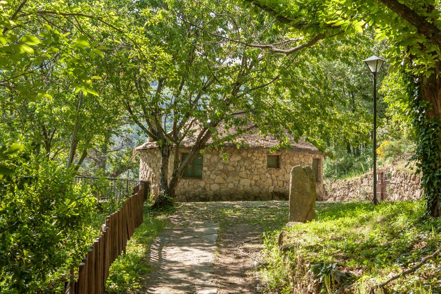
El Solitario is located on a hill near the town of Baños de Montemayor, which is less than a kilometre away. The nearest cities include Plasencia (43 km) and Salamanca (86 km).

For more information, you can contact info@iayc.org.
A few facts about Spain
Area: 505 990 km²
Population: ~ 46.4 Million (2015)
Capital: Madrid
Bigger cities: Barcelona, Valencia, Seville
Official Language: Spanish
Currency: Euro (EUR) €
International Dialling Code: +34
Travelling in Europe in general is very safe. You should have no problem finding English speakers, especially in the biggest cities.
Observing
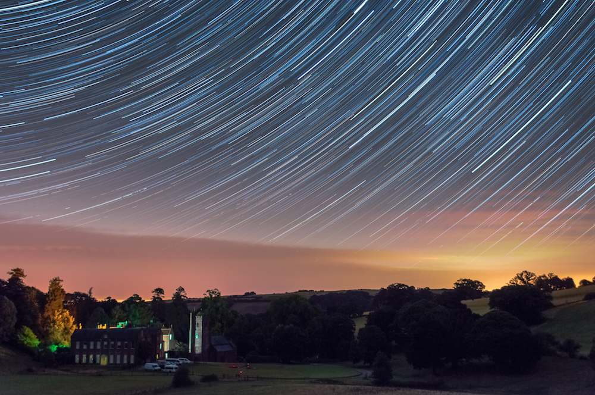
Startrail at Nettlecombe Court (UK) in 2016 (Image by Radka Dančíková)El Solitario is located in an area of very little light pollution. These conditions will be ideal for observing, which takes place during working group time as part of your project, or outside after midnight meal when the telescopes are available for everyone. Catch a glimpse of a celestial object through a telescope or lie down in your sleeping bag and enjoy the view.

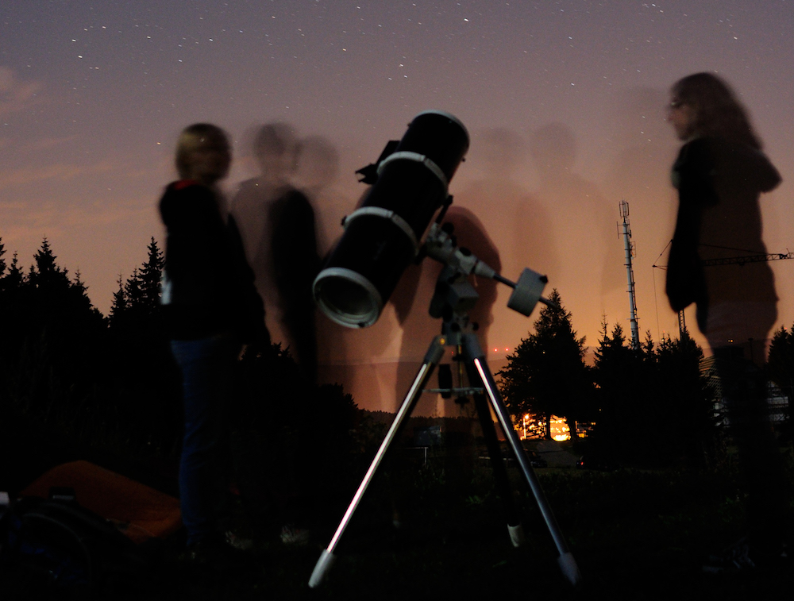
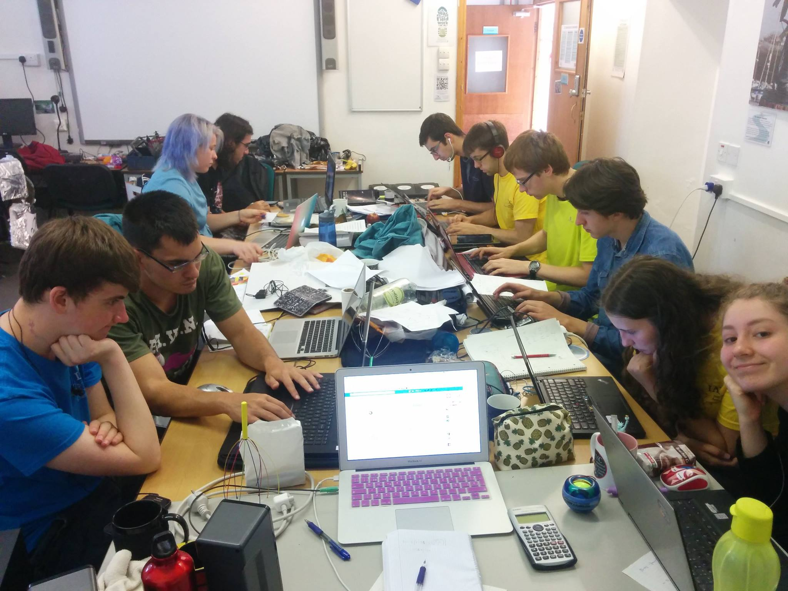
It’s not a problem if you don’t have any experience observing, the leaders and other participants are always happy to help. It doesn’t matter if it’s about constellations, how to use a telescope or how to take astro-pictures. At the beginning of the camp we will offer a telescope introduction to help you get a feel for the basics of how to use a telescope on your own.
Furthermore, there’ll be a photographic darkroom available. This means that you can take black and white (film) photos and develop them yourself. You are also welcome to bring your own telescope or binoculars. We will have available several telescopes and CCD cameras suitable for observing and the taking of astro-pictures.
For further information, contact daniel@iayc.org or alejandro@iayc.org. You can also check out the equipment page.
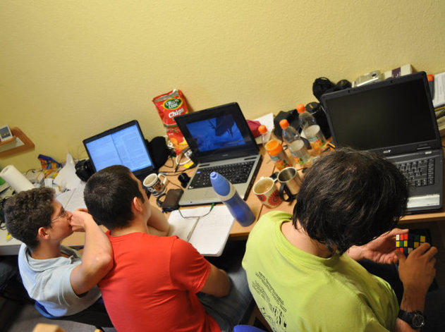


Participation
To participate in the IAYC you must be 16 to 24 years old (16 and 24 included). The participation fee for timely applications is 690 EUR. This applies to applications submitted before the 15th of April 2017. You will also require to sign a consent form and post it by regular mail before this date (the post stamp date counts!).
Later applications will be considered if places are still available, with an increased fee of 750 EUR. Timely applicants will be notified about the outcome of their application at the beginning of May. If accepted, you will need to transfer the applicable participation fee within 7 days of receiving the acceptance e-mail.
You can withdraw your application at any time before we receive the participation fee. If you want to drop out after that, and if we manage to fill up your place, we will refund you the full participation fee less an administration fee. This administration fee is 50 EUR if you drop out before the 6th of July and 100 EUR if you do it after (6th of July included). In the unlikely case we don’t manage to fill up your place the participation fee is non-refundable.
If financial reasons keep you from applying, then we encourage you to seek support from our limited grant programme. Write to info@iayc.org to obtain a grant application form. In order to apply for a grant, you need to fill in both the normal application and the grant application (grant applications will only be accepted together with the normal application, i.e. you cannot apply for a grant after you have already been accepted to attend the camp). Grant applications need to be sent to info@iayc.org.
The deadline for sending in a grant application is the 8th of April 2017. Candidates applying for a grant will have to send us a short video (maximum of 5 minutes) answering a questionnaire which will be provided together with the grant application form.
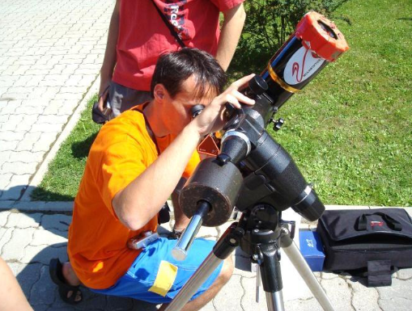

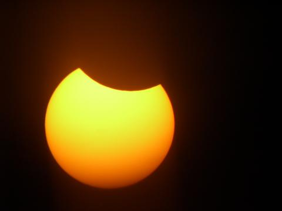
Choosing your working group
In the following section you can find the abstracts of the 8 working groups offered at the IAYC 2017. On the online application you will need to indicate which working group you want to participate in. In addition to the working group overviews, the Non-Astronomical Programme leader and the General Coordinator will also introduce themselves.
DAFT - analysis of DAta From Telescopes
Tags: practical, observational, data analysis, photometry, spectroscopy
Astronomy is a fascinating science for one reason: all we can do is look. We can’t stick a thermometer in a massive star or measure the distance to the Andromeda galaxy with a tape measure (they don’t make them that long, I’ve asked) so we have to get clever, or DAFT! The fascinating thing about astronomy is the amount of information we’ve gathered purely from looking at the light from the night sky. Unlike most physicists our “laboratories” are found in the dying throes of massive stars or the extreme conditions of orbiting black holes warping space time itself. In DAFT we will take part in the age old tradition by going out, measuring the light from objects in the night sky in different ways, reducing the data and analysing it to see what we can learn about these objects.
In DAFT we will make use of all the resources available to us, from a research grade spectrograph that we will be attaching to the telescopes here at camp to CCDs that will allow us to carry out photometric measurements. We will also make use of data from professional observatories such as from the 1-billion-star mapper space mission GAIA or ground based telescopes such as the Very Large Telescope.
Don’t be put off if this all sounds a bit much. All you need to do is bring your enthusiasm and we’ll figure out the rest. Whether you’re still in high school or on your way to your PhD, you’ll find something you’ll enjoy in DAFT.
I look forward to seeing you in sunny Spain this summer!
Daniel

If you first see Dan in the distance you may feel he’s just a normal bloke. But damn, that’s so wrong! Since he first arrived to IAYC in 2012 he has always surprised everyone with his brilliant sense of humour. Want to know a bit about him? Dan has a great eye for photography (you’ll certainly see him taking amazing pictures during the camp!), and if you don’t know what to tell him when you encounter him - just pick a line from Star Wars or Doctor Who, and see what happens. As the founder of the astronomical society of the University of Leeds (where he studies Physics and Astronomy), there should be no doubts about his knowledge and passion for astronomy. Do you have doubts about how to use a telescope? Is your leader too busy to be in the observation field tonight? Do you just need help observing? Dan is certainly your man. As he once said, anyone can see the Moon!
LEGEND - Let Electronic Gadgets End Notorious Duties
Tags: practical, electronics, programming, gadgets
Are you bored of doing the same things over and over again? Do you like when things happen themselves? Or maybe you just like tinkering and making things work when they try their best not to?
Look no more my friend, as LEGEND is the group for you! It is XXI century, the cars will soon drive themselves and we still have to do some things manually? Some people still use white light on the observing field?
Come and create the ultimate flashlight for astronomers or some blinky tags to prevent people from ruining your perfect astropicture. Does it not sound challenging enough? How about creating a device that will take control over the camera and take pictures itself! If you feel like getting your hands dirty and cutting some wood, why not make a timelapse machine?
We will have some fun with microcontrollers and arduinos. We will get annoyed at things when they don’t work. And at ourselves when we realise that it was because we didn’t connect the power supply. But these blood, sweat and tears will turn into the hysterical laugh of victory when it suddenly starts doing what it was supposed to.
Join LEGEND for loads of fun with electronics, coding and making stuff. If we are lucky we might even create something useful!
Mike

So this is Mike! Originally from Poland, he is currently studying Electronic and Computer Science at the University of Edinburgh. He’s really good at making gadgets and a master of arduinos! Who knows? We might wake up one day finding out he’s dominated the world with those little great controllers! But apart from all of that Mike is one of the best people I’ve ever known: he’s charmful, kind, tender, and he’s always willing to help with anything. This will be his first time as a leader, but he’s already been to 3 camps. You are lucky if you end up in his working group, he will make sure you have the three most wonderful weeks ever! Be ready.
LUCKY - Let Us Capture the night sKY
Tags: astrophotography, processing, telescopes, dark room
A clear sky is an astronomer’s favourite thing and we’re going to have a lot of them this year in Spain. We’ll be enjoying the dark sky in El Solitario and wish to stop the march of time. By capturing the magnificent beauty of the night sky it won’t be just a memory which is going to fade over the years. Instead you have something which will always remind you why we are so fascinated by it.
In LUCKY we will be experimenting with many different kinds of astrophotography. If you are interested in deep sky imaging you will learn how to use software to stack the pictures in order to get a higher quality image. Furthermore, you will get to know how to process your images in photoshop. For those of you who are interested in what one can do using only a tripod and a camera: you can learn how to make a time-lapse of the night sky or take some amazing star trails. Have you ever wanted to capture the milky way? Take large panoramas of the night sky? Then LUCKY is definitely the place for you!
Maybe you’re considering doing something different, like taking a time-lapse of the sunspots or developing photos in the dark room. Other ideas are welcomed as well - as long as they involve astrophotography LUCKY should be your ideal working group.
Are you excited to capture the beautiful night skies of Spain now? I’m going to make sure you take more pictures than you can count and have three amazing weeks - of course I’m not above giving you cookies and coffee to get you on my team. Don’t tell the others about my attempt at bribery though.
Can’t wait to meet you all in Spain!
Evi

Austria, the land of Mozart, schnitzel, the world’s largest pocket knife and Evi! But what’s so special about this Austrian that she would be such a notable point about this amazing land? Well for starters she’s currently studying towards her degree in physics at the university of Vienna and is the kind of person who’ll go to astrophotography conferences to relax. But that’s not all, when she’s not studying the universe you’ll likely find her in one of two states, either with a camera by her side taking beautiful pictures of the world around her or partaking in one of the many sporting activities she loves such as running, squash, rollerblading, gymnastics or trampolining (just ask her about her backflipping abilities). To top it all off she is one of the friendliest people you’ll ever meet so if you’re lucky enough to end up in her working group there’s no doubt you’ll feel welcomed and have an amazing time.
LUNAS - Learning Useful Notions About Satellites
Tags: natural satellites, solar system, observing, practical, bibliographical
When in 1610 Galileo discovered the 4 “Cosimo’s stars” (Galilean moons) around Jupiter, our concept of the universe drastically changed. From then, 178 natural satellites have been found orbiting planets in the Solar System (plus all the ones in minor-planets and asteroids!). This offers a huge catalogue of different and unique worlds. Among them we can find Io, the most volcanic body in our surroundings, or Enceladus and Europa with their global oceans - who knows what secrets could they keep! Not to speak about our own Moon, that enlightened the dreams of many - from the very first humans who stepped on its surface to the poets, like Sappho.
What will we do at LUNAS? During these three weeks we’ll mix theoretical and bibliographical studies with field observations: we’ll put ourselves in Galileo’s shoes observing and studying Jupiter’s “mini-planetary” system, and also revealing the deepest details of our Moon’s surface. Be prepared for observing Saturn’s rings during warm Spanish nights as well! “How do moons like Prometheus or Pan interact with that complex system?” is one of the many questions we are going to work on. Of course, if we talk about exotic bodies, we can’t forget about Pluto and Charon! How does this amazing binary system work? What kind of characteristics do all of these worlds share? Unravelling their secrets will also help us learn about our own world. Could any of them harvest life? Be ready to look for the answer of all these questions ;)
From my side, I’ll make sure you spend the whole camp wondering about our Solar System and understanding its diversity. I promise to provide you with cookies, ice-cream and every kind of sweets needed to board in this exciting journey :)
See you in Spain!
Mara

Mara is definitely the sweetest person you will find at camp! She has the superpower to make everything nicer around her, and usually she just does so by smiling!! Also, she makes the most extraordinary astro-pictures! Whenever she is not writing about astronomy or art in her amazing blog, she is studying physics at the Complutense University in Madrid. Since her first camp in 2015, this young lady impressed everyone with her talent and her loveliness and now, for the first time in 2017, we will all have the pleasure to have her as a leader! If you are fortunate enough to be in her working group, you’ll certainly have the best summer ever!
Mars to Stay
Tags: exploration, Mars, space program, design, mission
Humankind has always looked up to the sky and wondered about what possibilities that red dot named Mars could offer. We love to discover new things and settle down everywhere we can, Mars is just that, our future as explorers and wanderers.
In 1969 two humans landed on the surface of the Moon, after that, five more missions followed. But they were short, we didn’t plan a long term mission to the Moon. We stopped going there and kept ourselves in the low Earth orbit. That needs to change, we are prepared to make a bigger leap than the one Neil Armstrong did back on that 20th of July.
At Mars to Stay we will put all our efforts on creating a self sustaining civilization on Mars, starting from a simple international scientific base. First, we will need to answer some questions like: How will we go there? How will we sustain a crew of a few people during a long mission? Will the isolation from Earth affect us? Do potatoes grow on Mars? To accomplish this we will need engineers, biologists, geologists, physicists and lots of motivation. And all of that with no money limitations! We will focus on science and technology. Some examples of what we will design are: crew and cargo ships, habitats, greenhouses and “in-situ” resource utilization machines.
Sci-fi books like The Martian or Red Mars will help us get inspiration in our mission. We will make the dreams of those who wrote them become true. Companies like SpaceX have already started transforming this science fiction into real science and engineering. Their achievements during recent years like landing rockets in a barge in the middle of the ocean were amazing, that’s the kind of stuff humans need to accomplish in order to get out of this world.
The goal of all this effort is becoming a multiplanetary species. Do you think it is worth it? If the answer is yes, welcome aboard! I will make sure you spend three incredible weeks planning the future of the humankind. And I promise plenty of coffee and cookies will be available!
See you on Mars, I mean… Spain!
Alex

Just look at his face. Now look back at yours. You start smiling. Look back at his. He is smiling too. Look into the future. You two are hanging out and talking about astrophotography, rockets, Life, the Universe and Everything! That’s what experience with Alex is like! Coming back for his 4th camp, he is going to be a leader for the second time. So don’t hesitate and treat yourself to meeting this awesome Spaniard, our IAYC-version of the Hubble Espace Telescope from the University of Madrid, where he studies astrophysics. Marvel at his mind-blowing astro-pictures and have a go at stealing his knowledge while he sleeps (or by a nice chat under the stars). Whether you need to learn something, observe something, have fun with something or need a hug, Alex is your man to go! Whatever you end up doing, Don’t panic, as this super-friendly, lovely, incredible guy with a great sense of humour will have your back at the camp.
PANDA - Programming and ANalysing Data in Astronomy
Tags: programming, data analysis, astroparticle physics
Have you ever wondered how much data is available around us? In the last few years the so called Big Data has been part of the headlines of many newspapers and the reason is because nowadays, more than ever, the availability of large quantities of data is just one click away. For instance, anyone with the right tools is now capable to check the pollution levels of large cities or the recorded meteorite landings. Amazing, right?
We live, indeed, surrounded by data, and astronomy is no exception to this. Nowadays, there are a whole bunch of experiments in astronomy which produce large quantities of data, which need to be analysed with the use of computers to be understood. Some of these experiments, such as ANTARES (where I work!), IceCube, Fermi/LAT, Swift, and many others, have released part of their data in order to let anybody with the right tools reproduce their results - or what is more interesting, trying to use that information to obtain new ones!
So what is PANDA about then? In this working group you will use some of the tools needed to either analyse data or to make simulations to make sure you understand them. Are you up to the challenge to analyse public released data from high energy astronomy experiments? Do you prefer to make your own N-body simulations? Or maybe do you prefer learning about machine learning techniques? Some basic knowledge of programming before coming to the camp is recommended, although not compulsory - there will be options if you are completely new to this world, yet eager to learn!
Javi

Javi is one of the many Spanish leaders you’ll find on the leaderteam this year. Of course, this doesn’t make him any less unique! Javi comes from the seaside city of Valencia and is finishing his PhD in neutrino astronomy. He works with ANTARES, a large Cherenkov detector at the bottom of the Mediterranean Sea. His first camp was back in 2008, and it is an absolute pleasure to have him back with us again for his 5th camp as a leader. You’ll often find Javi behind the lens of a camera, tinkering in the dark room, or outside under the stars. You can be sure to find a friend in Javi, with his mischievous smile and his mirthful laugh.
POOP - Physics Of Orbiting Planets
Tags: space weather, fluid dynamics, numerical simulations
“Physics is really nothing more than a search for ultimate simplicity, but so far all we have is a kind of elegant messiness.”
This sentence of Bill Bryson captures the essence of physics and experimental science in general. Simple things are elegant and powerful, however for an unknown reason, Nature likes to play with us and make things complicated in the search of simplicity. What would have become of us scientists without the art of simplification.
During these 3 weeks we will try to investigate mainly some atmospheric phenomena of the planets in our small neigbourhood. How can a storm of a shape of a hexagon form in the pole of Saturn? What can sustain for almost more than 400 years a storm such as a the Great Red Spot of Jupiter? If the Earth rotates eastward why are the dominant winds in the tropics westward? How can a sand storm entirely cover Mars? How strong does a solar storm need to be to observe Northern Lights in La Habana as it was during the Carrington event in 1859?
We will use fluid dynamics, the branch of physics that studies fluids in montion, in order to answer these questions. This is not going to be easy, the simplest equation that describes the montion of a fluid is full of non linear terms that make it impossible to solve analytically. Fortunately, you can use the ancient art of simplifying and linearising your equations or use computers to solve them. So be prepared to play around with some numerical simulations.
So that’s it? Where is the POOP? That’s the point, there’s none. YES, we will work with physics. YES, that means fighting with some equations and some computer simulations. YES, you will have to think a bit. NO, you don’t need a master in maths or in physics. In fact being willing to learn is the only requirement. Of course, I will provide the distraction when you need it (but also forcefully encourage you to work if that becomes necessary). If you’re like me and like taking the simple route to good results, then join me and jump in to the wild and crazy world of Physics of Orbiting Planets.
See you in the summer!
Aitor

♪ Aitoor, Aitooohr, Aitor Aitor Aitor!… ♫ is the kind of person that makes the entire camp sing his name in unison without even trying, and who will make a disapproving face at such an event while probably secretly loving it. Truly an IAYC master, Aitor’s first camp was in 2008, and this is his eighth camp and fourth camp as a leader. He is currently studying climate modeling as a PhD student at Stockholm University in Sweden, but his roots are not far from here in Basque country. He is one of the most fun people to be around, and he will undoubtedly make you laugh when you need it (and when you think you don’t). IAYC 2017 brings you Aitor: the man who brought us “where is the poop?”, the man who made participants run faster than ever before (and still often escaped), and a new amazing friend you’re lucky to have.
SECS - Stellar Evolution & ClassificationS
Tags: stars, programming, data analysis, experimental, theoretical, observing
“We’re here all the time, but can’t always be seen. The more light there is, the less that we gleam.” We are stars, of course! In this working group, we will try to plot the Hertzsprung-Russell Diagram, a crucial tool for anyone studying stars and their life cycles.
A revelation of the early 20th century, the HR Diagram was a dramatic leap in helping astrophysicists understand stellar evolution, from initial cloud collapse to main sequence stars like our sun to catastrophically luminous explosions (and other less theatrical, but no less important, fates).
To do so, we will utilize everything at our disposal: raw observations and calculations, public datasets and catalogs, and stellar evolution software, oh my! Each avenue is essential to a young astronomy student’s learning, or at least an exciting addition to your educational toolbox. In addition to the methods mentioned above, we will use Python programming to carry out many of these functions – fret not, there is no experience necessary. Does starting from scratch interest you, such as obtaining a solar radiation spectrum and using fundamental equations and some approximations (so, so many astronomical approximations) to deduce plot-able information? Or how about handling large datasets from measurements people have already made and drawing conclusions about a star’s relative properties this way? Wouldn’t it also be useful to familiarize yourself with the insurmountable amount of information publicly available, anyway? Who even looks at Kepler data?
All right, theory-minded people, I haven’t forgotten about you: does stellar modeling and simulations entice you, such as using powerful software to understand a single star’s life cycle? Have you wondered about the limitations of such simulations, or perhaps why they are so useful? What does a theoretical astrophysicist even do? Together, we will explore stars – their births, lives, deaths, and rebirths – and together, we will be reminded every day under the punishing Spanish sun of their importance in our universe. Are you ready?
Melanie

Have you met Mel? If you haven’t done it yet, then there’s surely something missing in your life! Coming from the sunny region of California, she hasn’t missed a camp since her first appearance in 2015 in Germany. This is her first year as a leader, but don’t be fooled as she has all the skills needed in order to be the perfect leader: great commander, good listener and really caring towards others, she will never let you down. She is currently finishing her double degree in Astrophysics + Physics at UC Berkeley. Whenever you come across her, or just want a random chat, don’t be shy if you don’t know what to say to her: she doesn’t bite! ;) Just ask her about her famous talks at the camp, her playing role as Mr Darcy in Pride & Prejudice, or any other topic you think about. In her working group you are guaranteed to have plenty of fun and cookies.
NAP - Non-Astronomical Programme
Some of you might be wondering why there would be such a thing as a non-astronomical programme in an astronomy camp? Well as you will discover, NAP can be the border between near insanity induced by deadline-stress, faulty equations or that one typo you have been trying to find in your program for days.
Together in NAP we will learn that “technically correct” sometimes is the best kind of correct, we will grow and build stuff together, find out that “X” does not always mark the spot, and (this is almost most important) learn the value of winning a game without boiling an egg (i.e. no cheating ;) ).
Seeing as we are going to be in Spain and the weather is going to be pretty hot I will make sure to remind you to keep hydrated, that you don’t forget your sunscreen and that you take vitamins if you feel a cold coming on :). Also I am going to do my best to see to it that you will all be at breakfast on time (I promise I will practice my singing voice!).
The NAP is the place to go if you need materials for your projects, like for example if your rocket crash-lands and you need to re-attach some parts of it there will be lots of sticky tape!
I am looking forward to see you all in the biggest working group for an amazing amount of fun, craziness, learning about different cultures, singing, partying and much more!
See you in Spain!
Klaus

What’s that sound? Is it a cat? An alpaca? An aardvark? No, it’s a Klausi!!! Or should I say K-dot? Santa Klaus? Klausito? Those are some of his multiple nicknames! But don’t be fooled by his innocent face, he is the ultimate schemer. Nevertheless, Klaus is definitely one of the nicest people you will find at camp. This 27 year old Austrian is a big fan of Viennese sausages and schnitzel. You may find him working at the planetarium of Vienna, at the cinema, or at his favourite bar with his friends. He loses no time, when he’s not teaching kids about cultural astronomy in his lederhosen he is watching doctor who, reading comics, eating lasagna or playing on one of his three playstations. This cutie also has some of the most infamous quotes you will ever hear. Also, don’t forget to ask him about the krampus or what Oachkatzlschwoaf means if you want to learn something new!
GEN - General Coordinator
Don't look 'em in the eye
Look down, look down,
You're here until you die… ♪
So what is this thing called the General? Is this the coolest working group? Sadly no! Because the General Coordinator is in charge of the macroscopic organisation of the camp. What does that mean? I will be working behind the scenes making sure everything runs smoothly, taking care of the camp logistics and communicating with the house staff for you.
What should you expect from me? In general you shouldn’t notice me unless I join you during free time. If you don’t notice what I’m doing, it means everything is working just fine. You can come to me if you have any major problems: if you need to buy something very urgent like… I don’t know, Sunscreen! Because you forgot you are in Spain… if you are feeling sick I’ll take you to the doctor, if you have questions or personal problems come to me, we’ll sort something out, if you want to complain about food, well, I’m sorry but it’s Spain, you can never have too much jamón or paella, are you serious?
What should you not expect from me? I’m not a slave… please come to me only for important things, you can buy your own things in free time, and I can’t fix broken nails, I’m not a superhero (yet!), I only have two hands. But if you want to just visit me, massages are always welcome! I’m friendly :)
What else? Oh yes, I’ll make sure you get to the camp house safely, I’ll make sure you stay safe during the camp, I’ll handle all the problems you might have before the camp, I’ll make sure there’ll be food on the tables for breakfast lunch and midnight meal, I’ll make sure there’ll be snacks for the working group sessions, I’ll make sure there’ll be enough merchandise for you to buy, I’ll make sure you are always clean (if you don’t wash your clothes I’ll throw you in the washing machine with them on!!!), I’ll make sure your room is always clean, I’ll make sure you have something to do on the free day (sleeping is always a good option!) and of course I’ll make sure you always have the best clear skies possible. You don’t believe me? Well, it’s Spain, what do you expect, seriously…
Is that not enough work? Well I’m also in charge of making your IAYC experience unique and unforgettable, making sure you enjoy the atmosphere of this big family as much as possible! And most importantly, I’ll make sure you’ll have tons of fun and you work hard hard hard!!!!
See you this summer!
You'll always be a slave
Look down, look down,
You're standing in your grave...♫
Irati

If you don’t know Irati yet, you are in for a treat! This happy, smily, huggy girl from the Basque country is always up for a chat. When she is not working on her PhD in Astronomy (exploring star formation with GAIA) she is practising her Lindy-Hop, singing songs with her beautiful voice or figuring out where to get a tea-cup pig as a pet. Irati or ‘‘Ratters’’ as she is known by some people is one of the most organized and hard working people I had the pleasure of meeting and she will no doubt lead an amazing camp as General! If you see this lady in red around the camp, greet her with a friendly ‘‘Mara-Mara’’ (she will explain to you what that means ;) ) and ask her to tell you about the game involving a buried blindfolded chicken if you want to hear one of the tons of good stories she knows to tell.


Applying
Applications for 2017 are now closed.
Travel to the IAYC
Please note that we cannot make travel arrangements for individual participants. Travel to and from the camp is the sole responsibility of the participant. You will however upon acceptance receive a link to the Second Info brochure. It will contain more detailed information on how to travel to the camp. Additionally, you will receive a list with the contact details of all the other participants attending the IAYC 2017. This will enable you to contact other participants and arrange travel to the camp together. We will be arranging for coaches to take participants from Madrid to the camp house on the arrival day. This also applies for departure. More details will be available after acceptance.
Any questions?
If you have any questions that are not answered by this page, then we have an information service, info@iayc.org, that you can email. We will try to answer you within a couple of days - usually it’s sooner!
Before emailing info, please make sure you have read the First Info thoroughly. Please also read the FAQ which answers some of the more common questions that you might have.
We are looking forward to receiving your application and to seeing you in Extremadura, clear skies from all of us,
Aitor, Alex, Dan, Evi, Irati, Javi, Klaus, Mara, Mel and Mike.
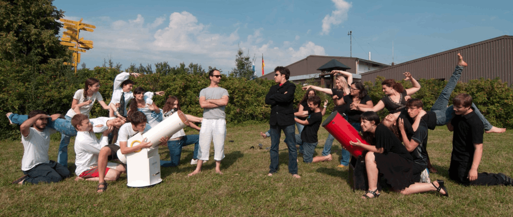